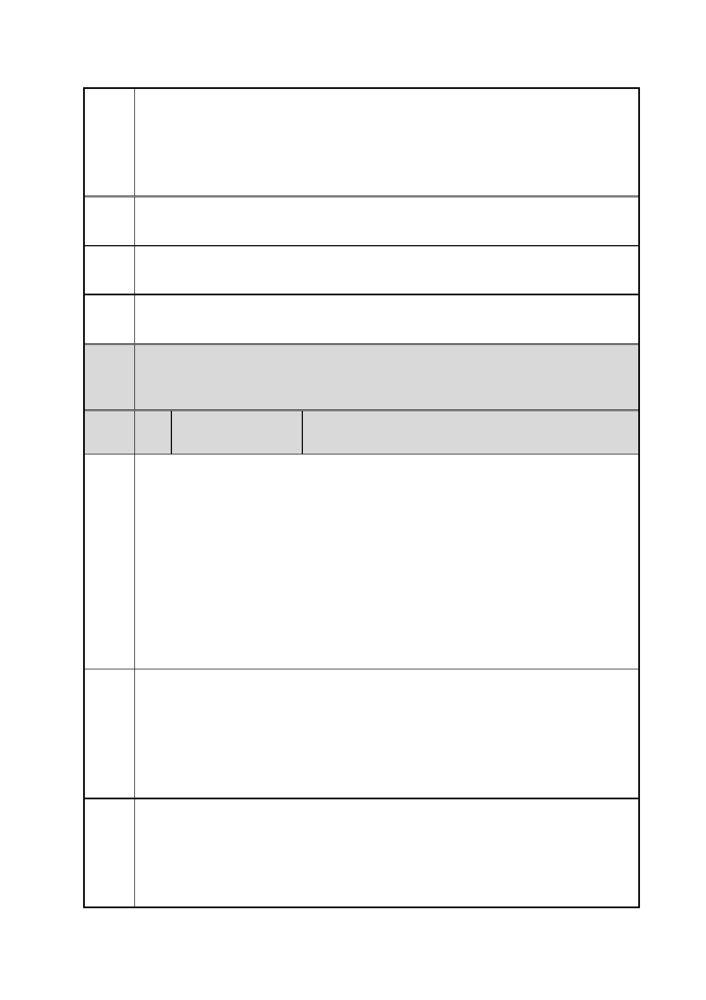

臺北市都市計畫委員會 公民或團體陳情意見綜理表
「變更臺北市信義區逸仙段二小段 33 地號等 21 筆土地（原臺北機廠）
案
名
工業區為創意文化專用區、特定專用區、道路及綠地用地主要計畫案」
及「擬定臺北市信義區逸仙段二小段 33 地號等 21 筆土地（原臺北機
廠）創意文化專用區、特定專用區、道路及綠地用地細部計畫暨劃定
都市更新地區計畫案」
陳情 規劃不完善。
理由
建議 請都發局與台鐵局重新提案。
辦法
市府 同編號 12 市府回應說明一。
回應
委員
會議 內容同編號 1。
決議
編
號
陳情
理由
一
35 陳情人
松菸公園催生聯盟 兼代表人 游○
經查，民國（下同）96 年至 98 年間，辛亥隧道上方中埔山步道曾遭
遇建案開發之威脅，後經在地居民、藝文人士、臺北市政府與地主間
妥善溝通協調，採變更都市計劃『臺北市文山區都市計畫通盤檢討（主
要計畫）案內「變更博嘉段 4 小段 70 地號住宅區為保護區」、「變更
興隆路三段海岸巡防署東側機關用地為綠地用地」及「變更辛亥隧道
東北側第二種住宅區為公園用地」（98 年 5 月 4 日府都規字第
09802091700 號公告實施） 』 併行容積移轉的方式，創造了三贏（自
然環境、地主權益與台北市民）的案例。臺北機廠全區具重大人文歷
史意義，應全區完整保留作為鐵道博物館，建請北市府參考中埔山步
道案例，重新檢討本案都市計畫變更。
建議
辦法
一
立即撤回本件變更都市含計劃案，重新進行臺北機廠全區保留之可行
性評估，由臺鐵將臺北機廠全區土地捐給臺北市，而臺北市可透過都
市計劃之手段，配合臺鐵將臺北機廠原有容積轉移至臺鐵其他無環
境、古蹟爭議之土地進行開發，如此不僅臺北機廠珍貴鐵道古蹟與歷
史文物可完整保留，亦可兼顧臺鐵欲以土地處分獲利填補虧損之地主
權益。
陳情
理由
二
依據內政部營建署「都市計畫工業區檢討變更審議規範」第四條第一
項第四款「工業區變更依法應辦理環境影響評估者，環境影響評估與
都市計畫變更應併行審查，並於各該都市計畫變更案報請核定時，檢
附環保主管機關審查通過之環境影響說明書或環境影響評估報告相
關書件。」本變更計畫案基地面積 17.035 公頃，已達「開發行為應
第 42 頁/共 154 頁